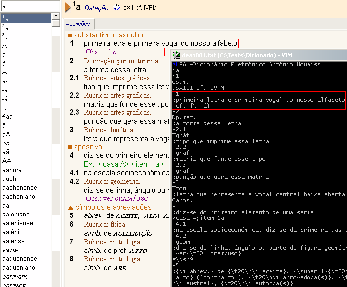
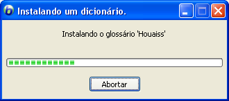
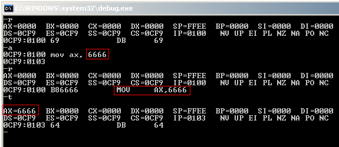

- Reflexo
- Try-catch flutuante
- Conversor de Houaiss para Babylon - parte 2
- Linux e o DHCP
- Aprendendo assembly com o depurador
- Guia básico de controle de código (Mercurial)
- Crash Dump Analysis: o livro
- Ode ao C++
- CSI: Crashed Server Investigation?
- Seminário CCPP Portabilidade e Performance
- Bazaar e Fedora 8: a saga
# Reflexo
Caloni, 2008-04-01 <quotes> <self> <now> [up] [copy]O padrão do pensamento cria um reflexo amplificado de si mesmo.
Tolle, Eckhart (O Poder do Agora, 1997)
# Try-catch flutuante
Caloni, 2008-04-03 <computer> <ccpp> [up] [copy]Esse detalhe da linguagem quem me fez descobrir foi o Yorick, que costuma comentar no blogue e tive o prazer de conhecer no 4o. EPA-CCPP.
É possível, apesar de bizarro, colocar um bloco try-catch em torno da lista de inicialização de variáveis de um construtor. Essa característica da linguagem permite que possamos capturar alguma exceção lançada por algum construtor de algum membro da classe. A construção em código ficaria no estilo abaixo:
Class::Class() try : initialization-list
{
// Class constructor body
}
catch(...) // note: this IS right!
{
// do something about
// just like "throw" over here
}
Apesar dessa capacidade, não conseguimos parar o lançamento da exceção. Após seu lançamento, caímos no bloco catch abaixo do corpo do construtor e a exceção é lançada novamente, como se houvesse uma intrução throw no final do catch.
O exemplo abaixo demonstra um código de uma classe que captura a exceção durante a inicialização dos membros. Na seguida o catch da função main é executada, provando que a exceção de fato não é "salva" no primeiro bloco.
#include <iostream>
/* This class explodes */
class Explode
{
public:
Explode(int x)
{
m_x = x;
throw x;
}
void print()
{
std::cout << "The number: " << m_x << std::endl;
}
private:
int m_x;
};
/* This class is going to be exploded */
class Victim
{
public:
Victim() try : m_explode(5)
{
std::cout << "You're supposed to NOT seeing this...\n";
}
catch(...)
{
std::cerr << "Something BAD hapenned\n";
std::cerr << "We're going to blow up\n";
// just like 'throw' over here
}
void print()
{
m_explode.print();
}
private:
Explode m_explode;
};
int main()
{
try
{
Victim vic;
}
catch(...)
{
std::cerr << "Something BAD BAD happenned...\n";
}
}
Testei esse código nos seguintes compiladores:
- Visual Studio 6. Falhou, demonstrando desconhecer a sintaxe.
- Borland C++ Builder 5. Falhou, demonstrando desconhecer a sintaxe.
- Borland Developer Studio 4. Falhou, com o mesmo erro.
- Visual Studio 2003. Comportamento esperado.
- Visual Studio 2005. Comportamento esperado.
- Visual Studio 2008. Comportamento esperado.
- G++ (no Cygwin). Comportamento esperado.
A saída esperada é a seguinte:
Something BAD hapenned We're going to blow up Something BAD BAD happenned...
# Conversor de Houaiss para Babylon - parte 2
Caloni, 2008-04-08 <computer> <projects> <drafts> [up] [copy]Após algumas semanas de suspense, chegamos finalmente à nossa segunda e última parte da saga do dicionário Houaiss.
Como devem estar lembrados, a primeira parte se dispôs a desmontar a ofuscação usada nos arquivos do dicionário para permitir nossa posterior análise, com o simples e justo objetivo de importá-lo para o Babylon, cujas funcionalidades de busca são bem superiores.
Feito isso, agora nos resta entender a estrutura interna do Houaiss para montar um conversor que irá ajudar o Babylon Builder a construir nosso Houaiss-Babylon. Simples, não?
A primeira parte de toda análise é a busca por padrões com um pouco de bom senso. O Houaiss armazena suas definições em um conjunto de arquivos de nome deahNNN.dhx (provavelmente deah de Dicionario Eletrônico Antônio Houaiss). Os NNN variam de 001 -- o maior arquivo -- até 065, com algumas poucas lacunas, em um total de 53 arquivos originais.
O nosso rústico importador fez o trabalho de desofuscar todos os 53 arquivos usando a mesma lógica encontrada pelo WinDbg: somar o valor 0x0B para cada byte do arquivo. Dessa forma foram gerados 53 arquivos novos no mesmo diretório, porém com a extensão TXT.
Partindo do bom senso, abriremos o arquivo maior, deah001.txt, e abriremos o próprio dicionário Houaiss, em busca de um padrão que faça sentido. Como poderemos ver na figura abaixo, o padrão inicial não é nem um pouco complicado.
As duas primeiras observações do formato do arquivo nos dizem que (1) o primeiro caractere de cada linha indica o conteúdo dessa linha, e que (2) a formatação dos caracteres é feita dentro de um par de chaves {}.
Dessa forma, podemos começar a construir nosso interpretador de arquivos do Houaiss em seu formato básico.
#include <iostream>
#include <string>
int main()
{
char cmd; // comando da linha atualmente lida
string line; // linha atualmente lida
int count = 0; // contador de palavras
while( getline(cin, line) )
{
cmd = line[0]; // guardamos o comando
line.erase(0, 1); // tiramos o comando da linha
format(line); // formatação da linha (explicações adiante)
switch( cmd ) // que comando é esse?
{
case '*': // verbete
++count;
cout << '\n' << line << '\n';
break;
case ':': // definição
cout << line << "<br>\n";
break;
}
}
return 0;
}
Simples e funcional. Com esse código já é possível extrair o básico que precisamos de um dicionário: os vocábulos e suas definições.
Para conseguir mais, é necessário mais trabalho.
A formatação segue o estilo já identificado, de forma que podemos aos poucos montar um interpretador de formatação para HTML, que é o formato reconhecido pelo Babylon Builder. Podemos seguir o seguinte molde, chamado no exemplo de código anterior:
void format(string& str)
{
string::size_type pos1 = 0;
string::size_type pos2 = 0;
while( (pos1 = str.find('<')) != string::npos )
str.replace(pos1, 1, "<");
while( (pos1 = str.find('>')) != string::npos )
str.replace(pos1, 1, ">");
while( (pos1 = str.find('{')) != string::npos )
{
if( pos1 && str[pos1 - 1] == '\\' ) // caractere de escape
str.replace(pos1 - 1, 2, "{");
else
{
string subStr;
pos2 = str.find('}', pos1);
if( pos2 != string::npos )
subStr = str.substr(pos1 + 1, pos2 - pos1 - 1);
else
subStr = str.substr(pos1 + 1);
istringstream is(subStr);
string fmt;
string word;
is >> fmt;
getline(is, word);
if( word[0] == ' ' )
word.erase(0, 1);
if( fmt.find("\\i") != string::npos )
word = "<i>" + word + "</i>";
if( fmt.find("\\b") != string::npos )
word = "<b>" + word + "</b>";
if( fmt.find("\\f20") != string::npos )
word = "<font style=\"text-transform: uppercase;\">" + word + "</font>";
if( fmt.find("\\super") != string::npos )
word = "<font style=\"vertical-align: super;\">" + word + "</font>";
if( pos2 != string::npos )
str.replace(pos1, pos2 - pos1 + 1, word);
else
str.replace(pos1, pos2, word);
}
}
}
Algumas partes ainda estão feias, eu sei. Mas, ei, isso é um código de ráquer, não é mesmo? Além do mais, se isso não é desculpa suficiente, estamos trabalhando em uma versão beta.
A partir dessas duas funções é possível dissecar o primeiro arquivo do dicionário, e assim, construirmos a primeira versão interessante do Houaiss no Babylon.
Como é normal a qualquer dicionário do Babylon, podemos instalá-lo simplesmente clicando duas vezes no arquivo (em uma máquina com Babylon previamente instalado).

O projeto atual está um tanto capenga, mas já desencripta os arquivos do Houaiss e gera o projeto do Babylon Builder sozinho. Em anexo já está um projeto do Babylon Builder. Basta copiar o arquivo Houaiss.txt para a pasta do projeto e gerar o projeto do Babylon.
# Linux e o DHCP
Caloni, 2008-04-09 <computer> [up] [copy]Quando procuramos no google por "linux dhcp", o que vem em resposta são diversas dicas, tutoriais, documentos oficiais e palpites sobre como configurar um servidor Linux.
Muito bem. E a outra ponta da história?
Estes testes foram feitos em um Fedora 8, não me pergunte mais detalhes.
O primeiro linque útil encontrado foi a documentação da Red Hat. Além disso seguem alguns macetes que eu descobri no decorrer do percurso. A primeira coisa a ser configurada é o arquivo /etc/sysconfig/network. Nele devemos, em uma configuração simplista, colocar uma única linha:
NETWORKING=yes
Tive alguns problemas com a entrada NETWORKING_IPV6, ou algo do gênero. A comunicação com o servidor DHCP da rede simplesmente não funcionava com essa linha, deixando o computador sem IP durante o boot. Má configuração do servidor? Pode até ser. Porém, não quis entrar nesses meandros.
Por isso, se houver a linha sobre IPV6 e você tiver problemas, comente-a temporariamente.
O passo seguinte é configurar a interface de rede, que é no fim das contas a representação da sua placa. Para isso temos alguns arquivos em /etc/sysconfig/network-scripts no formato ifcfg-nome-da-interface. Se você digitar ifconfig na linha de comando terá os nomes de interface disponíveis. No meu caso, eth0.
vi /etc/sysconfig/network-scripts/ifcfg-eth0 DEVICE=eth0 BOOTPROTO=dhcp ONBOOT=yes :wq
Note que o valor BOOTPROTO é realmente BOOTPROTO, com um O no final. Tive alguns problemas de soletrar também nesse caso, o que me gerou mais alguns reboots mal-sucedidos.
Bem, o que isso faz? Basicamente, manda o Linux utilizar o protocolo DHCP, procurando na rede algum servidor que lhe dê algum IP válido. Só isso. O resto ele faz dinamicamente.
Inclusive alterar automaticamente o arquivo /etc/resolv.conf. Nele estão definidas algumas coisas como o domínio de nomes que estamos e os IPs de onde buscar a resolução de nomes.
Feito isso, como se costuma dizer, voilà! Temos um cliente DHCP funcionando contente e feliz. Eu reiniciei a máquina para tudo dar certo, mas provavelmente devem existir maneiras mais saudáveis de reiniciar a rede (talvez um ifdown seguido de ifup resolvesse). E agora eu posso finalmente ter acesso aos pacotes de instalação que precisava.
Notas de um Linux padawan =)
# Aprendendo assembly com o depurador
Caloni, 2008-04-11 <computer> [up] [copy]Além de servir para corrigir alguns bugs escabrosos o nosso bom e fiel amigo depurador também possui uma utilidade inusitada: ensinar assembly! A pessoa interessada em aprender alguns conceitos básicos da arquitetura do 8086 pode se exercitar na frente de um depurador 16 ou 32 bits sem ter medo de ser feliz.
Vamos ver alguns exemplos?
Para quem está começando, recomendo usar um depurador simples, 16 bits e que existe em todo e qualquer Windows: o debug. Já usado para depurar a MBR aqui no bloque, poderá agora ser usado para ensinar alguns princípios da plataforma de uma maneira indolor. Basta iniciá-lo na linha de comando:
debug -
Os comandos mais úteis são o r (ver ou alterar registradores), o t/p (executar passo-a-passo), o d (exibir memória), o u (desmontar assembly) e o a (montar assembly). Ah, não se esquecendo do ? (ajuda).
Outro ensinamento bem interessante diz respeito à pilha. Aprendemos sempre que a pilha cresce de cima pra baixo, ou seja, de endereços superiores para valores mais baixos. Também vimos que os registradores responsáveis por controlar a memória da pilha são o sp (stack pointer) e o ss (stack segment). Pois bem. Vamos fazer alguns testes para ver isso acontecer.
-r AX=0000 BX=0000 CX=0000 DX=0000 SP=FFEE BP=0000 SI=0000 DI=0000 DS=0CF9 ES=0CF9 SS=0CF9 CS=0CF9 IP=0100 NV UP EI PL NZ NA PO NC 0CF9:0100 69 DB 69 -r ss SS 0CF9 :9000 -r sp SP FFEE :ffff -r AX=0000 BX=0000 CX=0000 DX=0000 SP=FFFF BP=0000 SI=0000 DI=0000 DS=0CF9 ES=0CF9 SS=9000 CS=0CF9 IP=0100 NV UP EI PL NZ NA PO NC 0CF9:0100 69 DB 69 -a 0CF9:0100 mov ax, 1234 0CF9:0103 push ax 0CF9:0104 inc ax 0CF9:0105 push ax 0CF9:0106 inc ax 0CF9:0107 push ax 0CF9:0108 -u 0CF9:0100 B83412 MOV AX,1234 0CF9:0103 50 PUSH AX 0CF9:0104 40 INC AX 0CF9:0105 50 PUSH AX 0CF9:0106 40 INC AX 0CF9:0107 50 PUSH AX 0CF9:0108 6C DB 6C ... AX=1234 BX=0000 CX=0000 DX=0000 SP=FFFF BP=0000 SI=0000 DI=0000 DS=0CF9 ES=0CF9 SS=9000 CS=0CF9 IP=0103 NV UP EI PL NZ NA PO NC 0CF9:0103 50 PUSH AX -t AX=1234 BX=0000 CX=0000 DX=0000 SP=FFFD BP=0000 SI=0000 DI=0000 DS=0CF9 ES=0CF9 SS=9000 CS=0CF9 IP=0104 NV UP EI PL NZ NA PO NC 0CF9:0104 40 INC AX -t AX=1235 BX=0000 CX=0000 DX=0000 SP=FFFD BP=0000 SI=0000 DI=0000 DS=0CF9 ES=0CF9 SS=9000 CS=0CF9 IP=0105 NV UP EI PL NZ NA PE NC 0CF9:0105 50 PUSH AX -t AX=1235 BX=0000 CX=0000 DX=0000 SP=FFFB BP=0000 SI=0000 DI=0000 DS=0CF9 ES=0CF9 SS=9000 CS=0CF9 IP=0106 NV UP EI PL NZ NA PE NC 0CF9:0106 40 INC AX -t AX=1236 BX=0000 CX=0000 DX=0000 SP=FFFB BP=0000 SI=0000 DI=0000 DS=0CF9 ES=0CF9 SS=9000 CS=0CF9 IP=0107 NV UP EI PL NZ NA PE NC 0CF9:0107 50 PUSH AX -t AX=1236 BX=0000 CX=0000 DX=0000 SP=FFF9 BP=0000 SI=0000 DI=0000 DS=0CF9 ES=0CF9 SS=9000 CS=0CF9 IP=0108 NV UP EI PL NZ NA PE NC 0CF9:0108 6C DB 6C -d 9000:fff9 9000:FFF0 36 12 35 12 34 12 00 6.5.4.. -
Como vemos, ao empilhar coisas na pilha, o valor do registrador sp diminui. E ao fazermos um dump do valor de sp conseguimos ver os valores empilhados anteriormente. Isso é muito útil na hora de depurarmos chamadas de funções. Por exemplo, no velho teste do Windbg x Bloco de notas:
windbg notepad 0:000> bp user32!MessageBoxW 0:000> g ModLoad: 5cfd0000 5cff6000 C:\WINDOWS\system32\ShimEng.dll ModLoad: 596f0000 598ba000 C:\WINDOWS\AppPatch\AcGenral.DLL ModLoad: 76b20000 76b4e000 C:\WINDOWS\system32\WINMM.dll ModLoad: 774c0000 775fd000 C:\WINDOWS\system32\ole32.dll ... ModLoad: 10000000 10030000 C:\Arquivos de programas\Babylon\Babylon-Pro\CAPTLIB.DLL ModLoad: 74c40000 74c6c000 C:\WINDOWS\system32\OLEACC.dll ModLoad: 76050000 760b5000 C:\WINDOWS\system32\MSVCP60.dll Breakpoint 0 hit eax=00000001 ebx=00000000 ecx=000a7884 edx=00000000 esi=000b2850 edi=0000000a eip=7e3b630a esp=0007f6d8 ebp=0007f6f4 iopl=0 nv up ei pl nz na po nc cs=001b ss=0023 ds=0023 es=0023 fs=003b gs=0000 efl=00000202 USER32!MessageBoxW: 7e3b630a 8bff mov edi,edi 0:000> dd esp L5 0007f6d8 01001fc4 00010226 000b2850 000a7ac2 ; ret handle message caption 0007f6e8 00000033 ; mb_ok 0:000> du 000b2850 000b2850 "O texto do arquivo Sem título fo" 000b2890 "i alterado...Deseja salvar as al" 000b28d0 "terações?" 0:000> ezu 000b2850 "Tem certeza que deseja salvar esse artigo de merda?" 0:000> g ModLoad: 75f50000 7604d000 C:\WINDOWS\system32\BROWSEUI.dll

Aposto que você sabe em qual dos três botões eu cliquei =)
Depurar é um processo que exige dedicação (experiência) tanto ou mais do que o próprio desenvolvimento. Por isso, fazer um esforço para descobrir algum problema em algum software pode ser vantajoso no futuro, pois você terá mais capacidade de entender o que está acontecendo à sua volta.
Básico a intermediário:
- Guia básico para programadores de primeiro breakpoint
- Brincando com o WinDbg
- Encontrando as respostas do Flash Pops
Intermediário a avançado:
- Hook de API no WinDbg
- Hook de COM no WinDbg
- Detectando hooks globais no WinDbg
- Analisando dumps com WinDbg e IDA
Blogues que eu acho superinteressantes sobre debugging (do mais essencial para o mais avançado):
# Guia básico de controle de código (Mercurial)
Caloni, 2008-04-15 <computer> [up] [copy]Houve um bom motivo para que, semana passada, eu estivesse caçando inúmeras versões de um projeto desenvolvido fora da empresa: falta de controle de código. Esse tipo de lapso pode consumir de horas a dias de tempo perdido, dependendo de em quantas cópias de máquinas virtuais ficou espalhado o código.
Já escrevi a respeito da importância de controlar e gerenciar o código-fonte para que a falta de um histórico exato das alterações não seja motivo de recorreções de problemas, binários no cliente sem contraparte para ajustes, além de uma série de dores de cabeça que costumam começar a ocorrer assim que nos damos conta que nosso software está uma bagunça que dói.
Na época, discursei brevemente sobre alguns exemplos de gerenciadores de fonte que utilizam modelo centralizado, e nos exemplos práticos usamos o famigerado Source Safe, velho amigo de quem já programa ou programou Windows por alguns anos. Além dele, temos os conhecidíssimos CVS e Subversion, ambos largamente utilizados no mundo todo.
No entanto, uma nova forma de controlar fontes está nascendo já há algum tempo, com relativo sucesso e crescentes esperanças: o modelo distribuído. Nesse tipo de gerenciamento, a liberdade aumenta exponencialmente, permitindo coisas que no modelo antigo seriam muito difíceis de serem implementadas. Não vou me delongar explicando a teoria por trás da idéia, sabendo que, além de existir um ótimo texto explicando as vantagens em cima do modelo centralizado disponível na web, o próprio sítio das implementações atuais explica a idéia de maneira muito convincente. E são elas:
- Mercurial (ou hg). Sem dúvida o mais fácil de usar. Bem documentado e com comandos intuitivos para o usuário, vem ganhando mais adeptos a cada dia. Seu desempenho é comparável ao do Git, e seu sistema de arquivos é bem eficiente.
- Bazaar (ou bzr). O irmão mais próximo do Mercurial, com comandos bem parecidos. Um costuma lembrar os comandos do outro, com pequenas diferenças. Seu desempenho não chega a ser comparável aos dois acima, mas sua robustez compensa, pois é o único, de acordo com testes e estudos, que suporta o controle total de operações de renomeação de arquivos e pastas. Recentemente seu projeto tem evoluído muito.
- Git (ou git). Conhecido como o controlador de fontes do kernel do Linux. Escrita a versão inicial por Linux Torvalds em C e módulos de Perl pendurados, hoje em dia tem como principal desvantagem a falta de suporte nos ambientes Windows, impactando negativamente em projetos portáveis. Sua principal vantagem, no entanto, é a rapidez: é o controle de fonte mais rápido do oeste.
Nos sistemas centralizados o repositório de fontes fica em um lugar definido, de onde as pessoas pegam a última versão e sobem modificações, ou não, caso não tenham direito para isso. Nos sistemas distribuídos, o histórico e ramificações ficam todos locais. Como assim locais? Bom, locais do jeito que eu estou falando quer dizer: na própria pasta onde se está desenvolvendo.
É lógico que pode existir uma versão de ramificações no servidor, que no caso do controle distribuído é mais um membro da rede peer-to-peer de ramificações, já que cada colaborador possui seu próprio repositório local, capaz de trocar revisões entre colaboradores e subir revisões os servidores que interessarem.
Além disso, o conceito de ramificações (branches) e consolidação de versões (merging) é muito mais presente do que em sistemas como o Subversion, onde o commit (ato de enviar as revisões de um código para o repositório central) ocorre de forma controlada. Da maneira distribuída, é comum criar um branch para cada problema ou feature sendo desenvolvida, e ir juntando tudo isso imediatamente após terminado, gerando um histórico bem mais detalhado e livre de gargalos com modificações temporárias.
Porém, a maior vantagem em termos de desenvolvimento acaba sendo a liberdade dos usuários, que podem trocar modificações de código entre si, sem existir a figura centralizadora do branch oficial. Ela pode existir, mas não é mais uma condição sine qua non para modificações no fonte.
Comecei a usar em meus projetos pessoais o Mercurial por ter ouvido falar dele primeiro. Achei a idéia fantástica, pois já estava à procura de um substituto para meu velho Source Safe, meio baleado das tantas inovações de controle de fonte que surgiram nos projetos de fonte aberto. Outro motivo para desistir do Source Safe foi o fato de ser uma solução comercial que custa dinheiro e não chega a ser absurdamente mais fácil de usar a ponto de valer a pena usá-lo.
O princípio de uso de uma ferramenta distribuída é muito simples: se você tiver um diretório de projeto já criado, basta, dentro dessa pasta, iniciar o repositório de fontes.
> hg init
Após isso, será criada uma pasta com o nome .hg. Dentro dela é armazenado todo o histórico dos fontes. Podemos inicialmente adicionar os arquivos do projeto existente e fazer o primeiro commit, que irá começar a controlar os arquivos adicionados dentro dessa pasta e subpastas:
> hg add adding Header.h adding Main.cpp adding Project.cpp adding Project.vcproj > hg commit -m "Primeira versao"
Se o programa não disse nada ao efetuar o commit, é porque está tudo certo. Agora podemos controlar as mudanças de nosso código usando o comando status. Para vermos o histórico usamos o comando log.
> hg log changeset: 0:e9246bcf2107 tag: tip user: Wanderley Caloni <wanderley@caloni.com.br> date: Tue Apr 15 09:05:27 2008 -0300 summary: Primeira versao > echo bla bla bla >> Main.cpp > hg status M Main.cpp > hg commit -m "Alterado algumas coisas" > hg log changeset: 1:829b081df653 tag: tip user: Wanderley Caloni <wanderley@caloni.com.br> date: Tue Apr 15 09:06:29 2008 -0300 summary: Alterado algumas coisas changeset: 0:e9246bcf2107 user: Wanderley Caloni <wanderley@caloni.com.br> date: Tue Apr 15 09:05:27 2008 -0300 summary: Primeira versao
Como vimos, ao alterar um arquivo controlado este é mostrado pelo comando status como alterado (o M na frente do Main.cpp). Também existem controles para cópia e exclusão de arquivos.
Esse é o básico que se precisa saber para usar o Mercurial. Simples, não? O resto também é simples: fazer branches e juntá-los é uma questão de costume, e está entre as boas práticas de uso. Eu recomendo fortemente a leitura do tutorial "Entendendo o Mercurial", disponível no sítio do projeto, até para entender o que existe por trás da idéia do controle descentralizado de fontes.
Como usuário de Windows, posso dizer que a versão funciona muito bem, e é possível fazer coisas como, por exemplo, usar o WinMerge para juntar branches ou comparar versões automaticamente, o que por si só já mata toda a necessidade que eu tinha do Source Safe.
Testei o Mercurial por cerca de três meses desde que o conheci. Esse fim-de-semana conheci mais a fundo o Bazaar, e pretendo começar a testá-lo também para ter uma visão dos dois mundos e optar por um deles. Ambos são projetos relativamente novos que prometem muito. De uma forma ou de outra, os programadores solitários agora possuem um sistema de controle de fontes sem frescura e que funciona para todos.
# Crash Dump Analysis: o livro
Caloni, 2008-04-17 <books> [up] [copy]Para quem acabou de terminar o Advanced Windows Debugging (como eu) e não consegue ler no computador os complicados artigos de Dmitry Vostokov (como eu), "seus problemas acabaram-se": acabou de ser lançado o Memory Dump Analysis Volume 1 em hardware! Em modelos portáveis (paperback) e desktop (hardcover).
Se você perder um pouco de tempo lendo o índice online perceberá que boa parte do conteúdo (se não todo) está em seu sítio, disponível gratuitamente. Porém, não há nada como ter um livro organizado para ler no conforto do ônibus para o serviço (ou do metrô para casa). Ainda mais depois de ter aguçado os sentidos com o livro de Mario Hewardt e Daniel Pravat.
Selecionei alguns tópicos que acredito que por si só já valeria a pena a aquisição do livro:
- Crashes and Hangs Differentiated. Você sabe diferenciar quando uma aplicação trava e quando ela emperra?
- Minidump Analysis. Este item está no capítulo sobre análise profissional.
- Raw Stack Data Analysis. Nunca é tarde para aprender sobre a pilha; de novo.
- Symbols and Images
- X64 Interrupts
- Trap Commands (on x86 and x64)
- Bugchecks Depicted. Capítulo essencial, complemento necessário do AWD; boa parte do kernel mode ficou de fora do livro de Windows, espero que esse capítulo cubra essa carência.
- Manual Stack Trace Reconstruction. Isso vai ser legal =)
- WinDbg Tips and Tricks. Provavelmente um dos mais úteis capítulos; não há nada como economizar tempo de debugging com um truque esperto na manga.
- WinDbg Scripts. Com certeza esse capítulo ficaria mais rico com a ajuda do Farah; mesmo assim, deve estar recheado de código para otimizar tempo.
- Crash Dump Analysis Patterns. A coleção de todas as idiossincrasias encontradas por Dmitry em todos esses anos (meses?) de blogue.
- The Origin of Crash Dumps
- UML and Device Drivers. Este é um tópico que eu defendo, e que só uma pessoa como Dmitry consegue entender: usar UML para descrever o funcionamento do kernel mode. Além de tornar as coisas mais simples de enxergar, é uma ótima oportunidade de migração de "coder to developer" para o pessoal de baixo nível.
Enfim, estou coçando os dedos para comprar logo um exemplar. Já sei pelo menos que com certeza serã a versão em brochura, pois não agüento mais fazer exercício muscular com o mais novo integrante da minha maleta.
# Ode ao C++
Caloni, 2008-04-21 <computer> <ccpp> <drafts> [up] [copy]Strauss: lembra quando nós conversávamos sobre o assunto "Por que C++?", há muitas décadas atrás, e seu blogue era um dos primeiros no Brasil que não ficava relatando o que o autor comia no café da manhã, além de falar sobre programação? Pois é, eu estava reorganizando meus g-mails e reencontrei nossa conversa e, pior, seu artigo "derivado" dela, que irei republicar aqui pois, assim como antes, acredito em tudo que escrevi naquela época.
Cristiano -- Olá! Sou programador em basic (Vbasic/Qbasic), fico indignado, com
pessoas que sabem enteder a linguagem C++, assembler... Como podem? Eu
acho isto coisa de outro mundo! Será que eu tenho chances de aprender
a linguagem?
Strauss -- A resposta é simples: estudando. Eu tb comecei com QBasic e VB. Arrume um livro de C++ e estude. Treine bastante. E hoje em dia é mais fácil do que quando eu comecei, pq eu não tinha acesso à Internet. É simples assim... :-)
Caloni -- Você pode ir tão longe quanto queira, mas pra isso a primeira coisa que vc tem que fazer é querer =).
Strauss -- Acho que vou fazer um post sobre isso. "Por que C++" :-) Vc podia me ajudar...
Caloni -- Escrevi um textículo sobre o assunto da escolha, mas não visando o mercado:
/** * @title Por que C++ * @author Wanderley Caloni Jr * @date 31.01.2005 */ É natural que um programador tenha preferência por uma linguagem. Geralmente por motivos pessoais que se refletem nas características da linguagem. Eu, por exemplo, tenho vários motivos para amar essa linguagem: Linguagem C. Todas as vantagens da linguagem C estão embutidas em C++. E sem aquele papo erudito que deve-se programar em OO para ser C++. Por ser multiparadigma, a linguagem também suporta o melhor da programação procedural e estruturada. Popularidade. C++ é o que há. Linguagem unânime e reconhecida no mundo todo como de uso geral. Dificilmente você vai encontrar um algoritmo que não tenha representação em C++. Economia e Expressividade. Pode parecer bobagem, mas coisas como operador de incremento e valor em todas expressões permite que se faça muita coisa com poucas linhas. Isso a torna muito expressiva. Isso, em outras palavras, quer dizer que você pode juntar várias expressões numa só, e esse conjunto será também uma expressão. Liberdade. Em C++ você é o culpado de virtualmente qualquer coisa de bom e ruim que aconteça no seu programa, pois você tem que seguir poucas regras e tem que ser responsável no que faz. C++ não te ajuda a seguir um bom modelo de programação com restrições embutidas. Isso a torna difícil para iniciantes, mas conforme aumenta a experiência, maior o prazer em programar. Portabilidade. A possibilidade de compilar e rodar o seu código em vários ambientes - de compilação e execução - é uma característica útil e agradável. No meu caso é só agradável, pois dificilmente faço código portável, apesar das boas noções que tenho sobre o assunto. E são essas boas noções que me permitem afirmar que C++ suporta muito bem essa possibilidade. Rapidez. Pode não ser importante em muitos casos, mas já é do instinto do programador o desejo de eficiência no código. E nada como programar numa linguagem extremamente eficiente em tempo de execução para se sentir feliz de ver o código rodando. FIM []s
Strauss -- Legal. Vou colocar minha água mercadológica no feijão e colocar no site.
Não quis alterar o texto original, mas colocaria, além de rapidez, o título economia de recursos. É incrível o quanto progredimos no quesito hardware todos esses anos, e mesmo assim, existem linguagens e ambientes que parecem ter fome suficiente para consumir tudo e deixar um computador de última geração parecer um micro "meio lerdinho". Felizmente não preciso dar nome aos bois, pois todos sabem ou conhecem pelo menos uma linguagem com essa característica.
Também não quis generalizar. C e C++ não são as duas únicas opções quando se fala em bom desempenho. Existe também assembly e linguagens de script, que chegam inclusive a ser mais flexíveis e rápidas (além de mais produtivas).
Ainda acredito em tudo isso que C++ proporciona e irá continuar proporcionando por muto tempo. Muitos programas escritos em C/C++ são conhecidíssimos e usados nos quatro cantos do mundo, muitas vezes em mais de um sistema operacional. C++ está morto? Longe disso... talvez pareça assim em território nacional, mas esse é o motivo de meus votos de sucesso no início de nosso grupo C++.
# CSI: Crashed Server Investigation?
Caloni, 2008-04-23 <drafts> [up] [copy]O artigo de Jeff Dailey, The Digital DNA of Bugs Dump Analysis as Forensic Science, em que ele compara a nossa atividade de "cientistas do debugging" com a atividade dos profissionais da análise forense, é exatamente o que eu penso sobre nossa profissão. Freqüentemente assisto à série CSI: Las Vegas e mais freqüentemente ainda uso os métodos científicos empregados pela equipe de Gil Grissom para resolver os problemas mais escabrosos que podem ocorrer em um sistema.
Jeff fez uma divertida comparação entre todas as etapas de uma análise forense com todas as etapas de nossa análise do bug. Aqui vai a tradução livre dessas etapas (em linguagem cinematográfica):
São duas horas da manhã. A câmera focaliza um pager explodindo sobre um criado-mudo... só pode querer dizer uma coisa: algo de ruim aconteceu e pessoas estão à procura de ajuda. O detetive acorda e diz para sua mulher: "Desculpe, eles precisam de mim... Eu tenho que ir".
Engraçado, eu fiz a mesma coisa, só porque alguém encontrou um servidor morto.
O detetive aparece na cena do crime. Todos os policiais estão confusos, então eles apenas mantém a área isolada até que os experts cheguem. Seus anos de experiência e iluminação única irão permiti-lo ver coisas que os outros não vêem.
Umm... Isso só me parece apenas familiar. Eu tipicamente uso Live Meeting ou Easy Assist...
Usando uma combinação de ferramentas especializadas e métodos aprendidos tanto na escola quanto os aprendidos com o tempo, a evidência é coletada na cena para que seja feita uma pesquisa adicional no escritório. Testemunhas são questionadas: "Por volta de que horas isso ocorreu?", "Você ouviu algum barulho estranho", e "você viu alguém ou alguma coisa não usual". Fotos são tiradas, objetos são arquivados, fibras e amostras de DNA são coletadas.
Ok, então o escopo do problema está determinado e todas as informações disponíveis foram obtidas. Ummm... eu faço isso todo dia.
O prefeito chama o oficial para que diga ao chefe dos detetives que nós devemos resolver este caso. Isso não pode acontecer de novo. Nós devemos capturar o vilão!
Sinta-se livre para substituir "prefeito" com qualquer figura de alto nível gerencial. Uau, isso ou é um cara mau e asqueiroso ou o driver de alguém está causando pool corruption causando um servidor crítico falhar!
Nós agora cortamos onde o detetive está no laboratório, usando luminárias, procurando por evidências de DNA, refletindo sobre os fatos principais do caso, pesquisando crimes passados.
Eu não sei sobre você, mas eu simplesmente me refiro a isso como o processo de depuração.
Finalmente um progresso: o DNA coletado na cena do crime identifica um suspeito que não deveria estar lá. Ao fazer uma pesquisa adicional, o suspeito tem um histórico desse tipo de atividade. O cara mau é capturado, os custos são arquivados e o caso está resolvido!
Isso deve ser o mesmo que encontrar a causa principal, preencher um bug, e lançar uma correção.
Para finalizar, uma frase do artigo original que resume tudo:
"Ultimately that's what we do. We are all detectives looking for the digital DNA of bugs in the wild affecting our customers. We hunt them down using tools, expertise, and experience."
Dmitry Vostokov imaginou siglas mais imaginativas e fiéis a todos os que depuram problemas em software, independente deste rodar em servidores ou máquinas de café. Além, é claro, de uma ótima dica de livro sobre análise forense. O significado da sigla neste post foi uma de suas sugestões. Thanks, Dmitry!
# Seminário CCPP Portabilidade e Performance
Caloni, 2008-04-25 <ccppbr> [up] [copy]Reserve sua cadeira. Está marcado para o último dia do mês de maio o primeiro seminário de nosso grupo nacional de programadores e aficionados por C e C++. É bom ou não é?
O assunto gira em torno de duas preocupações constantes na vida de todo programador de linguagens de nível médio:
- Quanta velocidade eu preciso nesse código?
- Em quais plataformas eu conseguiria compilar e rodar meu projeto?
Para responder estas questões teremos uma bateria de palestras com temas que, dessa vez, focam o simples, puro e independente uso das linguagens C/C++:
Dicas e Truques de Portabilidade por Wanderley Caloni
O objetivo dessa palestra é focar nos problemas da vida real que enfrentamos no dia-a-dia para tornar um código portável ou mais maleável para um dia ser. Nesse caso existem vários assuntos a tratar, como: construções ambígüas não-padrão, isolamento de particularidades de cada sistema, identificação de problemas de portabilidade, organização do código-fonte portável, entre outros.
O nível dessa palestra será o intermediário, porque eu preciso que o público tenha o conhecimento prévio de programação C e C++. Quando você está aprendendo, uma dica ou outra sobre portabilidade pode ser interessante para não ser desvirtuado desde o início. Porém, para realmente começar a programar multiplataforma, existem desafios que devem ser transpostos por aqueles que já conseguem um nível de organização e desenvolvimento em C e C++ que não deixa dúvidas sobre a qualidade do código.
Programação Concorrente com C++ por Fábio Galuppo
Fábio Galuppo estréia na nossa rede de palestrantes, depois de seu inspirador e excitante relato das peripécias do SD West desse ano. Ele irá falar de um tema extremamente atual, que é o uso de programação paralela, em especial usando C++. Existe uma série de coisas para entender, como os modelos a ser seguidos, o uso consciente de threads, a programação com bom desempenho nos novos chips com mútiplos núcleos de processamento e por aí vai.
Apenas para ter uma idéia da importância em se ir em uma palestra como essa, imagine que 99,9% dos produtos da Google se baseiam nesse tipo de programação, envolvendo uma plantação de algumas centenas (milhares?) de máquinas trabalhando um banco de dados gigantesco no modo cooperativo para entregar a resposta mais rápida possível do outro lado. Sentiu o drama?
Programação Multiplataforma Usando STL e Boost por Rodrigo Strauss
Voltando para o tema portabilidade, Rodrigo Strauss volta a repetir sua performance sobre Boost, dessa vez abrangendo o conjunto completo de bibliotecas que compõem essa extensão mais-que-necessária da STL para programadores produtivos e multiplataforma. Todos sabem que um código que apenas usa STL e C++ puro não consegue ir muito longe na vida real, apesar de ser 100% multiplataforma. O que muitos não sabem (inclusive eu) é como é possível turbinar o desenvolvimento portável com o uso do Boost, que é uma solução portável bem interessante.
Por exemplo, a manipulação de arquivos e diretórios não é lá o forte da STL, concentrada no conceito de streams. Com o uso do Boost, podemos ter o melhor da STL, só que turbinada. Além disso, o novo padrão de threads ainda está longe de chegar ao mercado, e o Boost.Threads é uma solução viável atualmente.
Técnicas de Otimização de Código por Rodrigo Kumpera & André Tupinambá
Essa é a estréia de dois palestrantes de uma só vez! Como um bom complemento, voltamos ao tema de otimização, dessa vez em aspectos mais genéricos. Entre questões mais ou menos banais como otimização de laços e benchmarkers, mas que faze toda a diferença saber, teremos ainda tópicos bem avançados, como a relação de nosso código com o cachê do processador, e a tão-falada técnica de branch prediction, presente na maioria dos processadores atuais.
Além do aspecto genérico teremos uma pitada de matemática, como o uso de lookup tables e a otimização de algoritmos baseada em operações vetoriais. Ainda como um aspecto básico, mas importante, temos o uso eficiente da memória, muitas vezes entregue ao controle do sistema operacional, que nem sempre sabe bem o que o programa está fazendo.
# Bazaar e Fedora 8: a saga
Caloni, 2008-04-29 <computer> [up] [copy]Seria bom se as coisas simples da vida fossem simples, não é mesmo?
Ontem, sexta passada e quinta passada, no meio de outras tarefas "urgentes", tentava desesperadamente conseguir instalar o Bazaar na minha VM de desenvolvimento, um Fedora 8 todinho configurado.
Para azar da minha pessoa, o guia simples e rápido de instalação do Bazaar não funcionava para minha distribuição Linux. Na verdade, funciona. Porém, é instalada uma versão tão antiga (0.91!) que o formato do banco de dados já se tornou incompatível.
#yum info bzr ... Available Packages Name : bzr Arch : i386 Version : 0.91 ...
O pior, no entanto, foi tentar encontrar uma solução para o problema. Fiz mil e uma pesquisas com palavras-chave que nem imaginava que seria capaz de formular. E nada. A princípio minha idéia era apenas atualizar a lista de pacotes do repositório gerenciado pelo yum, o gerenciador de pacotes oficial do Fedora. Entre minhas buscas, encontrei os seguintes itens:
- Um FAQ do Fedora (que não conseguiu responder à minha pergunta).
- O sítio do projeto do yum, gerenciador de pacotes (cujo FAQ não conseguiu responder o mínimo).
- Uma lista enorme de sítios explicando como criar seu próprio repositório (sem comentários).
Enfim, a coisa não estava saindo do lugar. E o cronograma apertando até o dia final. Até que decidi usar o caminho mais rápido e pentelho: perguntar para quem entende do assunto. No caso meu amigo de trabalho Marcio Andrey Oliveira. A resposta foi simples e direta:
Por que você não instala direto dos fontes?
Uia! E não é que é mais simples, mesmo?
#wget https://launchpad.net/bzr/1.3/1.3.1/+download/bzr-1.3.1.tar.gz
#tar -zxvf bzr-1.3.1.tar.gz /* ele teve que me explicar esse comando singelo */
#cd bzr-1.3.1
#cat INSTALL
Installation
------------
When upgrading using setup.py, it is recommended that you first delete the
bzrlib directory from the install target.
To install bzr as a user, run
python setup.py install --home ~
To install system-wide, run (as root)
python setup.py install
#python setup.py install
E foi isso! É a segunda vez que tento fazer algo simples no Linux e me dou mal. Com certeza os dias futuros serão melhores. Mas me bate aquela sensação que as coisas poderiam já estar em um nível mais fácil de se mexer. Opinião pessoal.
[2008-03] [2008-05]